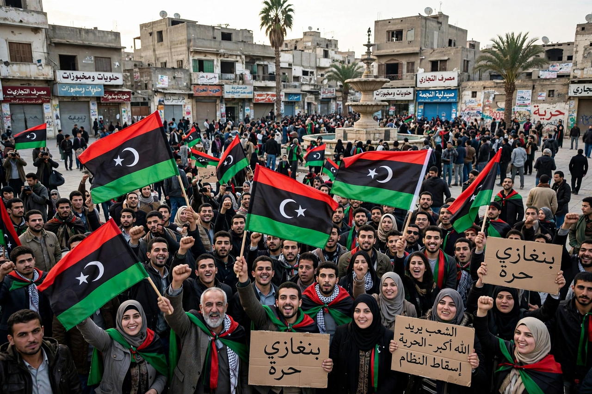

The National Transitional Council (NTC; Arabic: المجلس الوطني الانتقالي) was the de facto government of Libya during and after the First Libyan Civil War of 2011. Formed in Benghazi on 27 February 2011 by anti-Gaddafi forces, it declared itself the sole legitimate representative of the Libyan people, gained recognition from more than one hundred countries and the United Nations, and governed Libya from the fall of Muammar Gaddafi until it handed power to the elected General National Congress on 8 August 2012 — the first peaceful transfer of power in modern Libyan history.
| National Transitional Council | |
| Formed | 27 February 2011, Benghazi |
|---|---|
| Chairman | Mustafa Abdul Jalil |
| Head of government | Mahmoud Jibril (to Oct 2011); Abdurrahim El-Keib (from Nov 2011) |
| Dissolved | 8 August 2012 |
| Succeeded by | General National Congress |

Benghazi, birthplace of the NTC and seat of the Libyan uprising in 2011.
As protests that began in mid-February 2011 escalated into armed revolt against Gaddafi's 42-year rule, local councils in liberated eastern cities coalesced into the NTC. Its chairman was Mustafa Abdul Jalil, Gaddafi's former justice minister who had defected to the uprising; the physician and former planning official Mahmoud Jibril headed its executive board and acted as its chief diplomat and de facto prime minister. The council included representatives of regions, tribes, the military defectors who formed the nucleus of the rebel army, and the Libyan diaspora.
France became the first country to recognise the NTC as Libya's legitimate government on 10 March 2011. After the UN Security Council adopted Resolution 1973, authorising a no-fly zone and "all necessary measures" to protect civilians, a NATO-led coalition intervened militarily; the NTC's forces, supported by coalition air power, ground slowly westward. Tripoli fell in August 2011, Gaddafi was captured and killed in Sirte on 20 October, and the NTC declared the liberation of Libya three days later. In September 2011 the UN General Assembly voted to seat the NTC as Libya's representative.
The NTC moved its seat to Tripoli and in November 2011 appointed an interim cabinet under Abdurrahim El-Keib. Working under a Constitutional Declaration it had issued in August 2011, it organised elections for a 200-member General National Congress, held on 7 July 2012 — Libya's first free national elections in over sixty years, in which the National Forces Alliance of Mahmoud Jibril won the largest bloc of party seats. On 8 August 2012, in a ceremony symbolising democratic transition, the NTC dissolved itself and handed authority to the Congress. Libya's subsequent fragmentation into renewed civil conflict does not erase the NTC period's significance as the country's first attempt at representative government.